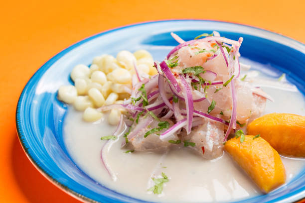

CEVICHE PERUANO
Home

DESCRIPTION
El ceviche es el plato bandera de la gastronomía peruana. Consiste en frescos trozos de pescado blanco marinados en jugo de limón recién exprimido, sazonados con ají limo, cebolla morada y cilantro. Se sirve tradicionalmente acompañado de camote glaseado, choclo desgranado y cancha serrana.
INGREDIENTS
Carnes y bases
- Filete de pescado blanco fresco (lenguado, corvina o mero, cortado en cubos)
- Camote sancochado o glaseado (en rodajas)
- Choclo desgranado y cocido
Verduras y hierbas
- Cebolla morada (cortada en pluma fina)
- Ají limo (picado finamente y en rodajas)
- Cilantro fresco (picado finamente)
Aderezos y Extras
- Sazón y líquidos: Jugo de limón fresco, sal, pimienta y un toque de ajo molido (o caldo de pescado).
- Para acompañar: Cancha serrana tostada y hojas de lechuga (opcional).
STEPS
- Bases y pescado: Ten listos el camote, el choclo y corta el pescado fresco en cubos.
- Sazonar y marinar: Coloca el pescado en un bol, añade sal, ají limo, ajo y mezcla bien.
- Ácido y mezcla: Vierte el jugo de limón recién exprimido y remueve suavemente por unos segundos.
- Mezcla final: Agrega la cebolla morada y el cilantro, sirve de inmediato con el camote, choclo y cancha.
Otras recetas de la cocina peruana